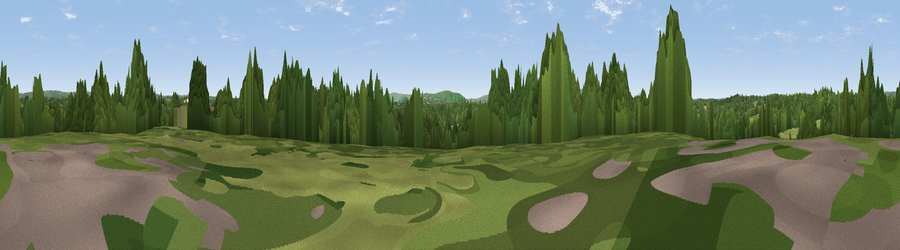

Viewpoint near Isfield
#43047 in England · top 80% of its area beats it · near Isfield · access?Where it is
The exact computed spot (TQ 43175 18775). Click the marker for map links.
Public access: no public right of way or access land is recorded at this exact spot — it may be on private land. Computed from Natural England's CRoW access layer and OpenStreetMap rights of way — not the legal definitive map. Always verify locally.
The view, rendered

A 360° render of this exact spot computed from the terrain model, tree cover and land cover — summer colours, afternoon light, calibrated against photographs of famous viewpoints. Real trees, hedges and buildings will differ in detail.
The panorama
Grey silhouette: terrain skyline in each direction (720 bearings, Earth curvature and refraction included). Dashed green: skyline with trees (+15 m) and buildings (+8 m) as obstacles. Blue strip: how far the ground is visible on each bearing.
Where the view opens
Wedge length = distance to the farthest visible ground on that bearing (vegetation-aware). Rings at 10, 25 and 50 km.
What fills the view
52% grassland · 35% woodland · 13% cropland ·
Angular shares of the visible panorama (visual magnitude), not map area. Landscape diversity 0.44 (0–1 Shannon).
Key numbers
More beautiful places nearby
The staircase of upgrades: each row has a higher view potential than everything closer. Driving times are estimates from straight-line distance, calibrated against real road routing — check an actual route before setting out.
| Place | Direction | Drive | Score |
|---|---|---|---|
| Viewpoint near Chailey | WNW · 4 km | ~8 min | 25.6 |
| Viewpoint near South Chailey | WSW · 4 km | ~9 min | 32.2 |
| Viewpoint near Sheffield Park | N · 7 km | ~15 min | 39.7 |
| Malling Hill | S · 8 km | ~16 min | 73.8 |
| Cliffe Hill | S · 8 km | ~16 min | 79.3 |
| Viewpoint near Plumpton | SW · 8 km | ~17 min | 80.4 |
| Viewpoint near Westmeston | SW · 10 km | ~20 min | 80.9 |
| Ditchling Beacon | WSW · 12 km | ~22 min | 81.8 |
50.95063, 0.03691 · source: screening · position refined by local search. Computed location — check access rights before visiting.